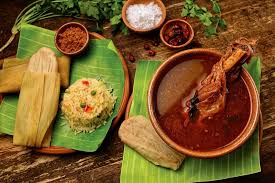
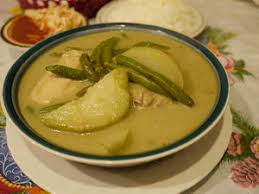
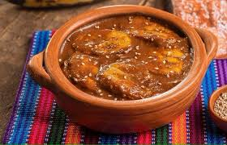

Otras Comidas Tradicionales

Pepián
Uno de los platillos más antiguos de Guatemala, con influencia maya y española.

Kak'ik
Sopa tradicional q'eqchi' con pavo, especias y chiles.

Jocón
Guiso con pollo en una salsa verde de miltomate y hierbas.

Tamales
Presentes en diversas variedades en todo el país.
Fiambre
La ensalada fría más elaborada y tradicional de Guatemala.

Plátanos en Mole
Postre tradicional con plátanos maduros y salsa de chocolate.